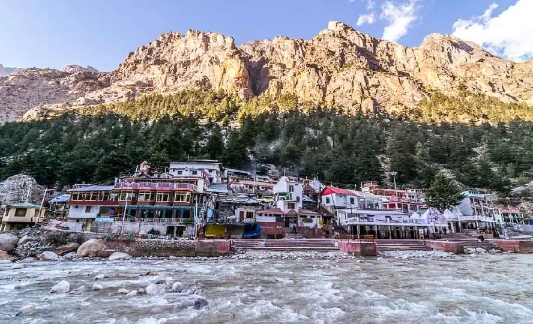
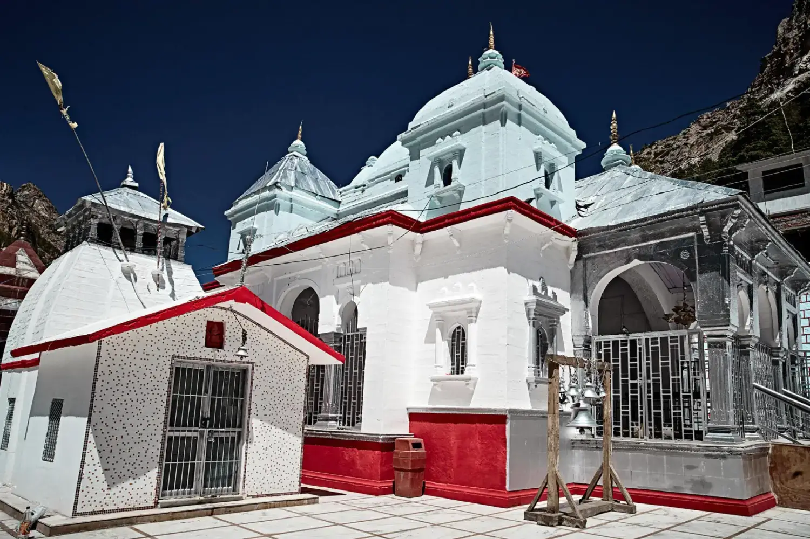
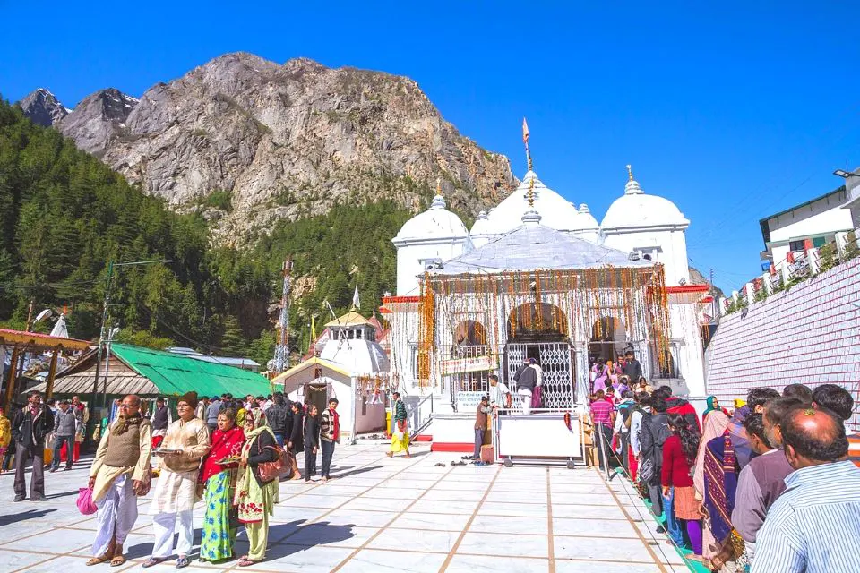
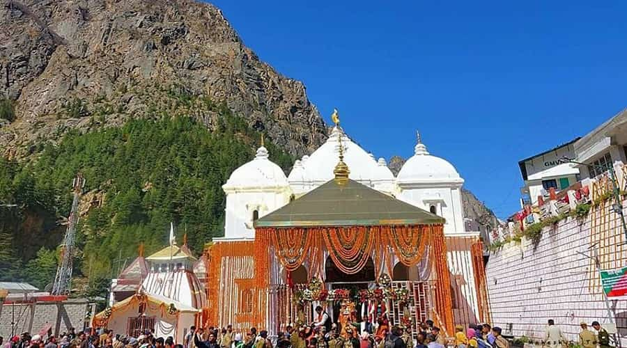

Gangotri Dham (Gangotri Temple) is one of the four revered shrines of the Char Dham Yatra and the holiest pilgrimage site dedicated to Goddess Ganga in Uttarakhand. Nestled at an elevation of about 3,140 meters in the Uttarkashi district on the banks of the Bhagirathi River (the main source stream of the Ganges), this ancient temple marks the symbolic origin of the holy Ganga. According to Hindu mythology, King Bhagirath performed severe penance here to bring the river down from heaven to earth for the salvation of his ancestors' souls, and Lord Shiva released her from his matted locks to control her descent — making Gangotri the divine cradle where Maa Ganga first touched the mortal world. The white marble temple, with its simple yet elegant architecture and the sacred stone idol of Goddess Ganga, radiates profound spiritual energy amid towering snow peaks, glaciers, and dense deodar forests.
The true source of the Ganga lies 19 km upstream at Gaumukh (the snout of the Gangotri Glacier), accessible via a moderate trek that offers breathtaking Himalayan vistas and a sense of touching the river's origin. Gangotri Dham opens seasonally due to extreme winter snowfall, transforming into a vibrant hub of devotion during the yatra months with daily aartis, bhajans, and the flow of pilgrims seeking purification, moksha, and the blessings of Maa Ganga. Surrounded by the raw majesty of the Garhwal Himalayas, the site evokes deep peace, reverence, and renewal — a place where the eternal river whispers of forgiveness, life, and the unbreakable bond between the divine and humanity.
May to June for pleasant weather (10–20°C), clear skies, and easy access post-opening; September to October for crisp air, post-monsoon freshness, and stunning Himalayan views with fewer crowds. Temple opens around mid-April to late April (e.g., Akshaya Tritiya, April 19, 2026) and closes in late October to early November (e.g., November 10, 2026 tentative). Avoid heavy monsoon (July–August) due to landslides and road risks; winter closure makes it inaccessible. Early mornings offer serene darshan and magical sunrise over the peaks.
Darshan of Goddess Ganga idol in the ancient marble temple, holy dip in the icy Bhagirathi River, Gaumukh trek (19 km) to the glacier source, daily aarti and pooja rituals, nearby Surya Kund & Pandav Gufa legends, panoramic views of snow peaks & glaciers — perfect for spiritual purification, photography of the divine landscape, meditation by the river, and experiencing the origin of the sacred Ganga in the heart of the Himalayas.
Book accommodations and transport early (peak yatra season crowds), acclimatize gradually to high altitude (carry layers for cold mornings/evenings), take holy dip in Bhagirathi if possible (very cold water), maintain silence and respect sanctity, hire local guide for Gaumukh trek (permit required), carry water/snacks/medicine (facilities basic), follow eco-rules (no plastics/littering in sacred area), and plan full Char Dham route if combining with Yamunotri, Kedarnath, Badrinath for deeper pilgrimage experience.
"At Gangotri, where the heavens pour their purest gift upon the earth, Maa Ganga flows not just as water, but as eternal compassion. In the silence of glaciers and the roar of the Bhagirathi, every pilgrim finds their sins washed away, their soul renewed, and the quiet truth that the divine mother descends to lift humanity toward the light of liberation."